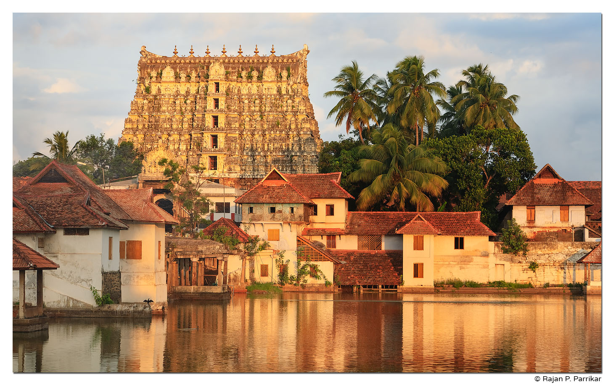

Kochi
Kochi, also known as Cochin, features historical places like Fort Kochi, Mattancherry Palace, and the Jewish Synagogue. The Chinese Fishing Nets are iconic landmarks.


Kochi, also known as Cochin, features historical places like Fort Kochi, Mattancherry Palace, and the Jewish Synagogue. The Chinese Fishing Nets are iconic landmarks.
Thiruvananthapuram, the capital, is home to historical sites such as Padmanabhaswamy Temple, Napier Museum, and Kanakakunnu Palace.

Kollam boasts historical attractions like Ashtamudi Lake, Tangasseri Lighthouse, and Thangassery Beach. The city has a rich maritime history.